<!doctype html>
<!--[if lte IE 8]>
<html class="lteie8"><![endif]-->
<!--[if gt IE 8]><!-->
<html><!--<![endif]-->
<head>
	<meta charset="utf-8">
	<title>Template</title>
	<meta name="viewport" content="initial-scale=1"/>
	<link rel="stylesheet" media="screen" href="style.css">
	<!--[if gte IE 9]>
	<style type="text/css">
		.panel-gradient {
			filter: none;
		}
	</style>
	<![endif]-->
</head>
<body class="b-catalog">
<div class="blur">
<!-- begin top  -->
<div class="top">
	<!-- begin header  -->
<div class="header">
	<div class="header__in">
		<a href='#' class="header__logo"><i></i></a>		<ul class="header__nav">
	<li><a href="/" class="is-active">ГЛАВНАЯ</a></li>
	<li><a href="o_proekte.html">О ПРОЕКТЕ</a></li>
	<li><a href="catalog.html">КАТАЛОГ</a></li>
	<li><a href="o_dome-a.html">ПРОИЗВОДИТЕЛИ</a></li>
	<li><a href="contacts.html">КОНТАКТЫ</a></li>
</ul>		<!-- begin header__right  -->
<div class="header__right">
	<div class="searchicon"></div>	<a href="javascript:void(0)" class="login">ВХОД</a>	<div class="lang">
	<a href="#" class="lang__en is-active"></a>
	<a href="#" class="lang__ru"></a>
</div></div>
<!-- end header__right -->	</div>
	<!-- end header in -->
</div>
<!-- end header -->	<div class="top__in">
		<!-- begin superslider  -->
<div class="superslider  cycle-slideshow"
	 data-cycle-fx=fade
	 data-cycle-timeout=6000
	 data-cycle-speed=2000
	 data-cycle-slides=".superslider__slide"
	 data-cycle-pager=".superslider__pagi"
	 data-cycle-prev=".superslider__prev"
	 data-cycle-next=".superslider__next">
	<div class="superslider__slides">
		<!-- begin slide -->
		<div class="superslider__slide" style="background-image: url(assets/img/slider/joia.jpg);">
		</div>
		<!-- end slide -->
		<!-- begin slide -->
		<div class="superslider__slide" style="background-image: url(assets/img/slider/Cesari.jpg);">
			<div class="superslider__text">
				<span>Винодельческий дом</span>
				ЧЕЗАРИ
			</div>
		</div>
		<!-- end slide -->
		<!-- begin slide -->
		<div class="superslider__slide" style="background-image: url(assets/img/slider/Poggio_Antico.jpg);">
		</div>
		<!-- end slide -->
		<!-- begin slide -->
		<div class="superslider__slide" style="background-image: url(assets/img/slider/Henkell.jpg);">
			<div class="superslider__text">
				<span>Винодельческий дом</span>
				ХЕНКЕЛЬ
			</div>
		</div>
		<!-- end slide -->
		<!-- begin slide -->
		<div class="superslider__slide" style="background-image: url(assets/img/slider/Ogier-alt.jpg);">
			<div class="superslider__text">
				<span>Винодельческий дом</span>
				ОЖЬЕ
			</div>
		</div>
		<!-- end slide -->
		<!-- begin slide -->
		<div class="superslider__slide" style="background-image: url(assets/img/slider/bg-5.jpg);">
			<div class="superslider__text">
				<span>Винодельческий дом</span>
				ЛЮСЬЕН ЛЮРТОН
			</div>
		</div>
		<!-- end slides -->
		<!-- begin slide -->
		<div class="superslider__slide"
			 style="background-image: url(assets/img/slider/Image_slayder_Fine-Arts.jpg);">
		</div>
		<!-- end slides -->
	</div>
	<div class="superslider__in">
		<div class="superslider__next"></div>
		<div class="superslider__prev"></div>
		<div class="superslider__playpause"></div>
		<div class="superslider__pagi"></div>
	</div>

</div>
<!-- end superslider -->		<div class="page pr0">
			<!-- begin logoslider  -->
<div class="logoslider ">
	<div class="logoslider__in ">


		<div class="logoslider__slides cycle-slideshow"
			 data-cycle-paused=true
			 data-cycle-fx="carousel"
			 data-cycle-prev=".logoslider__prev"
			 data-cycle-next=".logoslider__next">
			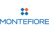
			
			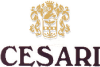
			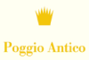
			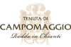
			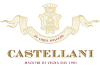
			
			
			
			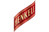
			
			
			
			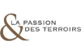
			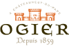
			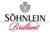
			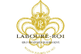
			
			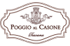
			
			
			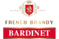
			
			
			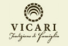
			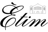
		</div>
		<div class="logoslider__next"></div>
		<div class="logoslider__prev"></div>
	</div>
</div>
<!-- end logoslider -->		</div>
	</div>
</div>
<!-- end top -->

<!-- begin page  -->
<div class="page pr0 center">
	
<!-- begin appeal  -->
<div class="appeal center toggled mb_block appeal_margin">
  <div class="appeal_image">
    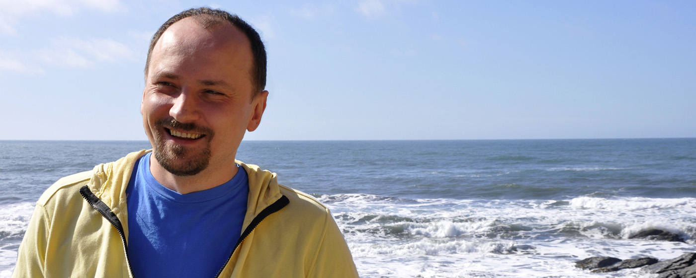
  </div>
  <div class="appeal_content gradiente_block clearfix">
    <article>
      <h1>Обращение руководителя проекта</h1>

      <p>
        Вино – особенный напиток. Оно сопровождает многие важные и приятные моменты жизни. Поэтому должно
        дарить людям впечатления от нового вкуса, создавать хорошее настроение...
      </p>
    </article>
    <a href="#" class="toggle_link" data-toggle=".appeal">
      <span>читать полностью</span>
      <i></i>
    </a>
  </div>
</div>
<div class="hided_content gradiente_block appeal_hiden_content">
  <article class="clearfix">
    <h1>Обращение руководителя проекта</h1>

    <p>
      Вино – особенный напиток. Оно сопровождает многие важные и приятные моменты жизни. Поэтому должно
      дарить людям впечатления от нового вкуса, создавать хорошее настроение...
    </p>
    <p>Riscipicature la prorum dolore dolectatur, consedipsum hition cullent.</p>

    <p>Am quae ipsunti isquate non comnist, tecus desectatum lat quam quibus del modi aliatur antotatiate
      soloria spedit vellore delicab orerro eos eturiatia samet quation con repra dicias aces ra eicae
      omnimus, opti ut pro volorepudae molorio ipitis mossi nusapis dolor rendita speritati nienis quo
      dolorporem. Et vellestem lauda num reprat et eum accum ipsae. Eperfero molore vollace rferum qui aut
      liquam re minus.</p>
    </article>

    <blockquote>
      Вино – особенный напиток.<br>Оно сопровождает многие важные и приятные моменты жизни. Поэтому должно
      дарить людям впечатления от нового вкуса, создавать хорошее
    </blockquote>
    <p>Cesti utempos dolumquis doluptatem fugita quiamus quam utasperum soluptate prore omniet inimped maio.
      Ut imusdam facid ma net, ipsapedit, con cupturi tiaestion ent ut quasinc tatias core aut as aut
      explite nulparcipsam aut la nonem id moluptur moluptae cum, odisquia ilit exerundeliam qui inverib
      ustiae doluptaturio offictorit pliant volor aspitium ad ut officid ut et la sitia solest dolo est
      aliteca boriandis et est vendend ipienisci ipis maionem perrovi ditisciaest, culpa quatist aut ommos
      suntiat hita cum unt am, ilictiis dolorpo rporrum ullesed molupit alignimus qui blacitio to et
      hictum volore reperci endam, que mintistio quam dolectur?</p>

      <p>Quidunt oriatur autaspi enducium estibus nobit, num aceaquam, que esciditat quos mostota volupta
        voluptat omnit ario quis voluptur? Agnimus, verferio dignam nobissi quam que cus, nonsequia
        consequodio et ab im facerunt velesti oreperspit, at et etureperum quo et arum facienis et ullabor
        porpos maxim quam nist, et, sinis andametur, ut doluptis et qui occus nat alitia doluptiorem et quod
        mollant.</p>

        <p>Tenim solorum is est faccuptat a que aligni sum eatem recuptae nonseni mporisc itibus et hit lias mi,
          con corem accae cum experunt eumquas simincte occuptatur, aut porepra tustius as ullendi dem quatium
          re conest, exeria sumquiasinto tessim dentece pereratur rernatur sit quibusa ndicil ius sin raerro
          erum aut ini nus ducit, se porument la et ut pa coreri cusa ent, aut aut od quidist hictur, que
          laboriberum est accum invelest alita dolorest, sunti que aut ut aut re vellori tecero cum faccum
          reheniate soluptiatque quis dus, conempo ritiunto tem volenisque consectemqui aliquas mos ulpa
          vendam nis res poreiur?</p>

          <p>Qui as volupta tureseque odi di consequaspit pro qui as quo imperatem eatiae nosam repratur? Ga. Nam
            rempore sectet qui re, secte nectota aut exeri ullaudis. Quidunt oriatur autaspi enducium estibus
            nobit, num aceaquam, que esciditat quos mostota volupta voluptat omnit ario quis voluptur? Agnimus,
            verferio dignam nobissi quam que cus, nonsequia consequodio et ab im facerunt velesti oreperspit, at
            et etureperum quo et arum facienis et ullabor porpos maxim quam nist, et, sinis andametur, ut
            doluptis et qui occus nat alitia doluptiorem et quod mollant. Quidunt oriatur autaspi enducium
            estibus nobit, num aceaquam, que esciditat quos mostota volupta voluptat omnit ario quis voluptur?
            Agnimus, verferio dignam nobissi quam que cus, nonsequia consequodio et ab im facerunt velesti
            oreperspit, at et etureperum quo et arum facienis et ullabor porpos maxim quam nist, et, sinis
            andametur, ut doluptis et qui occus nat alitia doluptiorem et quod mollant. Quidunt oriatur autaspi
            enducium estibus nobit, num aceaquam, que esciditat quos mostota volupta voluptat omnit ario quis
            voluptur? Agnimus, verferio dignam nobissi quam que cus, nonsequia consequodio et ab im facerunt
            velesti oreperspit, at et etureperum quo et arum facienis et ullabor porpos maxim quam nist, et,
            sinis andametur, ut doluptis et qui occus nat alitia doluptiorem et quod mollant.</p>
            <div class="director">
              <p class="name">Денис Барабанов</p>
              <span>Директор по импорту и развитию</span>
            </div>
            <a href="#" class="toggle_link" data-toggle=".appeal">
              <i></i>
            </a>
          </div>
          <!-- end appeal -->	<!-- begin about_project -->
<div class="about_project toggled mb_block about_progect_margin">
	<div class="h2 lf">Fine Wines & Spirits</div>
	<div class="about_project_content gradiente_block clearfix">
		<article>
			<p>JOIA – это маркетинговый проект в общей структуре компании НЕСКО, специализацией которого
				является импорт, продажа и продвижение качественных вин и крепких алкогольных напитков на рынке России и
				других стран. Этот выделенный отдел объединил команду профессионалов для построения сильных
				<a href="#">брендов</a> и их развития на рынке.</p>

			<div class="hided_content">
				<div class="purpose">
					<h1>Цель создания</h1>

					<ul>
						<li>Лидерство компании НЕСКО по объему поставок вин и крепких алкогольных напитков в сегменте
							он-трейд<br>в Северо-Западном регионе РФ и республике Татарстан.
						</li>
						<li>Формирование имиджа профессионального игрока на рынке качественных вин.</li>
						<li>Создание и продвижение брендов в сегменте импортных вин и крепкого алкоголя.</li>
					</ul>
				</div>
				<div class="stages">
					<h1>Этапы развития проекта</h1>

					<p><strong>2009 - 2010 гг.</strong> – Формирование базового ассортимента вин.</p>

					<p><strong>2010 г.</strong> – Открытие собственного импорта</p>

					<p><strong>2010 г. ноябрь</strong> – Создание отдела развития сегмента horeca в Санкт-Петербурге.</p>

					<p><strong>2010 г. ноябрь</strong> – Создание марки итальянских вин Montefiore.</p>

					<p class="selected"><strong>2011 г. март </strong> – Создание проекта по импорту и продвижению импортных
						вин – JOIA.</p>

					<p><strong>2011-2012 гг.</strong> – Усиление ассортиментного портфеля.</p>

					<p><strong>2011-2012 гг.</strong> – Выход на рынки приоритетных регионов России, создание клуба
						дистрибьюторов.</p>
				</div>
				<div class="mission">
					<h1>Миссия</h1>

					<p>Jóia в переводе с португальского – драгоценность. Именно это понятие определяет наше отношение к
						продукту,с которым мы работаем.  Мы стремимся улучшать качество жизни через знакомство с богатым
						миром вина.</p>

				</div>
				<div class="valuables">
					<h1>Ценности</h1>

					<h2>Работа только с интересными и качественными винами.<br>Мы предлагаем только те вина, которые нравятся нам самим.</h2>
					<ul>
						<li>В нашем портфеле мы объединили всемирно известные, сильные бренды, получившие признание
							влиятельными винными критиками, такими как Robert Parker, Jencis Robinson, Gambero Rosso и
							другими.
						</li>
					</ul>

					<h2>Профессиональная команда, нацеленная на максимально высокое качество обслуживания наших
						клиентов. </h2>

					<ul>
						<li>Мы работаем над построением брендов образовательными программами для наших отделов продаж и
							клиентов, организуем различные виды презентаций по продуктам и дегустации, осуществляем промо и PR
							поддержку для ключевых марок, консультируем наших клиентов и оказываем помощь в составлении винных
							карт.
						</li>
					</ul>
					<div>
						<h2>Высокий уровень сервиса, оперативная обработка и доставка заказов, гибкие коммерческие условия.</h2>

						<h2>Адекватный уровень цен. Мы стремимся сделать интересное и исключительно качественное вино доступным
							для российского потребителя.</h2>

						<h2>Обеспечение прибыли для наших клиентов за счет формирования спросасо стороны конечных
							потребителей.</h2>

						<h2>Мы думаем о позиционировании, заботимся о презентабельности наших продуктов, предлагаем интересные
							маркетинговые программы для продвижения наших брендов.</h2>
					</div>
				</div>
				<div class="benefits">
					<h1>Конкурентные преимущества проекта</h1>

					<h2 class="first">Сильный ассортимент</h2>

					<h2>Фокус на марках</h2>
					<ul>
						<li>Формирование спроса со стороны конечных потребителей, маркетинговые программы.</li>
					</ul>
					<div>
						<h2>Максимальный сервис</h2>
						<ul>
							<li>Подготовка карт, предоставление оборудования, обучения,  дегустации, программа
								клиентоориентированности НEСКО.
							</li>
						</ul>

						<h2>Максимально доступный уровень цен при сохранении максимально высокого качества продукции и
							конкурентных условий работы</h2>
						<ul>
							<li>Наши цены на 15-40% ниже основных конкурентов Симпл, МБГ,  Форт, UD,  Альянта. Мы выплачиваем
								клиентам премии за оказание услуг по продвижению наших марок и высокого процента
								представленности.
							</li>
						</ul>
					</div>
				</div>
				<div class="wine_brand">
					<h1>Фирменное вино проекта JOIA</h1>

					<p><strong>«Montefiore Joia, Toscana IGT»  выражает идеологию проекта:</strong></p>
					<ul>
						<li>Высокое качество, отличный вкус, доступно по цене.</li>
						<li>Вино создано по принципу «супертосканских» вин – «babysupertuscan».</li>
					</ul>
				</div>
			</div>
		</article>

		<a href="#" class="toggle_link" data-toggle=".about_project">
			<span>читать полностью</span>
			<i></i>
		</a>
	</div>
</div>
<!-- end about_project -->	
<!-- begin baners-->
<div class="baners mb_block clearfix">
  <a href="javascript:void(0)" class="baners_baner">
    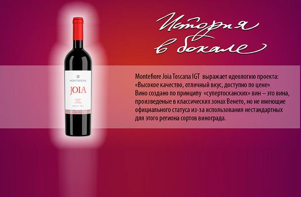
    <span class="caption">Вино проекта JOIA</span>
    <div class="baners__full">
      <i class="entry__large__close"></i>
      <h3 class="baners__caption">Вино проекта JOIA</h3>
    </div>
  </a>
  <a href="javascript:void(0)" class="baners_baner baners_baner2">
    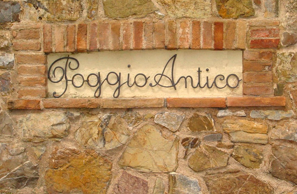
    <span class="caption">Новаторство, традиции и неизменное качество.</span>
    <div class="baners__full">
    <i class="entry__large__close"></i>
      <h3 class="baners__caption">«Подджо Антико - лучший экологический винодельческий дом Италии». Gambero Rosso.</h3>
      <p class="baners__text">
        Последние четыре года поместье получало высшую отметку (3 бокала) от итальянского винного рейтинга Gambero Rosso, как лучший экологический винодельческий дом Италии. За свою небольшую историю (~35 лет) хозяйство Подджо Антико успело произвести переворот в итальянском винном законодательстве и стать новаторами в производстве Брунелло.
        <br>
        <br>
        Подджо Антико стало первым производителем брунелло, использовавшим для выдержки французский дуб, создав, таким образом, уникальное вино в нетрадиционном стиле под названием Альтеро. Благодаря французскому дубу вино приобретает больший аромат и сладость во вкусе. С первого года урожая Альтеро - 1983г. по 1995г. вино имело статус IGT, так как выдерживалось в дубе - 2 года, а по закону срок выдержки должен был составлять 3 года. С 1995 года Альтеро приобрело официальный статус DOCG, поскольку срок выдержки был сокращен на законодательном
        уровне.
      </p>
    </div>
  </a>
</div>
<!-- end baners-->	
	<!-- begin about_project -->
	<div class="about_project mb_block events">
		<div class="h2 lf">Fine Wines &amp; Arts</div>
		<div class="eventslider">
			<div class="eventslider__in">
				<div class="eventslider__slides cycle-slideshow"
				data-cycle-fx="carousel"
				data-cycle-slides=">div"
				data-cycle-prev=".eventslider__prev"
				data-cycle-next=".eventslider__next">
				<div>
					<div class="item" style="background-image: url(assets/img/Monte-veranda2.jpg);">
						<a class="item__link fancybox" href="#ItemFull-1">
							<div class="item__content">
								<h1 class="item__title">Монтефьоре в третий раз стал официальным партнером фестиваля Стереолето</h1>

								<p class="item__anons">В этом году в рамках фестваля будет проходить презентация нового дизайна вин MONTEFIORE.</p>
							</div>
							<div id="ItemFull-1" class="item__full gradiente_block">
								<a class="fancy-close" href="javascript:void(0)">
									<i class="entry__large__close"></i>
									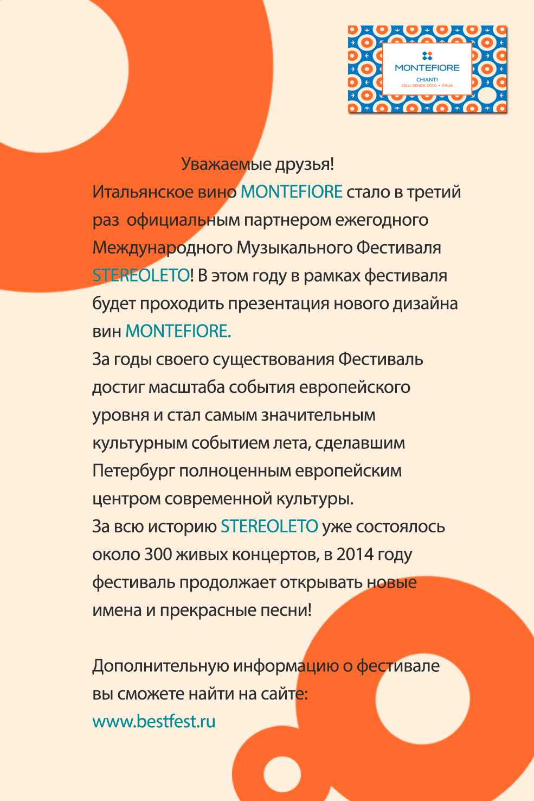
								</a>
							</div>
						</a>
					</div>
				</div>
				<div>
					<div class="item" style="background-image: url(assets/img/solo_italiano.jpg);">
						<a class="item__link fancybox" href="#ItemFull-2">
							<div class="item__content">
								<h1 class="item__title">Solo italiano – Лучшие итальянские вина.</h1>

								<p class="item__anons">Компания IEM (International Exhibition Managment) при поддержке Института внешней торговли Италии 30 мая 2014 года провела традиционную выставку одних из лучших итальянских вин.</p>
							</div>
							<div id="ItemFull-2" class="item__full gradiente_block">
								<a class="fancy-close" href="javascript:void(0)">
									<i class="entry__large__close"></i>
									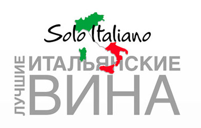
									<h1 class="item__head">Solo italiano – Лучшие итальянские вина.</h1>
									<p class="item__text">
										Компания IEM (International Exhibition Managment) при поддержке Института внешней торговли Италии 30 мая 2014 года провела традиционную выставку одних из лучших итальянских вин. Основная задача, как и в предыдущие годы, познакомить российскую публику с наиболее яркими винодельческими домами и их продукцией. В этом году было заявлено около 100 компаний из традиционных винодельческих регионов Италии: Тоскана, Пьемонт, Венето, Сицилия и др.
										<br><br>
										Проект «JOIA» представил своих давних партнеров компании Cesari, Sant’ Agata, Vicari и нового для себя, но имеющего всемирную славу Poggio Antico, производителя Великого Брунелло.
									</p>
								</a>
							</div>
						</a>
					</div>
				</div>
				<div>
					<div class="item" style="background-image: url(assets/img/1326.jpg);">
						<a class="item__link fancybox" href="#ItemFull-3">
							<div class="item__content">
								<h1 class="item__title">IX Салон Испанских Вин</h1>

								<p class="item__anons">30 октября 2013 года в Санкт- Петербурге в гостинице «Астория» прошел IX Cалон Испанских Вин при поддержке Торгово-Экономического отдела посольства Испании.</p>
							</div>
							<div id="ItemFull-3" class="item__full gradiente_block">
								<a class="fancy-close" href="javascript:void(0)">
									<i class="entry__large__close"></i>
									
									<h1 class="item__head">IX Салон Испанских Вин</h1>
									<p class="item__text">
										30 октября 2013 года в Санкт- Петербурге в гостинице «Астория» прошел IX Cалон Испанских Вин при поддержке Торгово-Экономического отдела посольства Испании. В работе салона приняли участие около 20 импортеров и более 30 испанских виноделен, которые заинтересованы выйти на российский рынок. Вина были представлены прославленными винодельческими провинциями: Риоха, Рибера дель Дуэто (кава и херес), Приорат, Риас Байшас, Бьерсо, Руэда, Ла Манча (гарнача, темпранильо, вердехо и многие другие).
										<br><br>
										По сути это нетрадиционный формат дегустаций, где производители и импортеры представлены на отдельных стендах и посетители сами выбирают вино, которое хотят попробовать. Процесс дегустации сопровождается живым общением с представителями импортеров и различных виноделен. В этом году проект JOIA представил на салоне два испанских производителя – «Martinez Bujanda» и «Etim». C испанской стороны нас поддерживал представитель компании «Martinez Bujanda» - Хосе Мария де Кастаньеда.
										<br><br>
										«Свидетельством успеха наших вин стало то, что многие участники Салона, что называется, «на месте» принимали решение о представлении их в своих винных картах и на полках своих магазинов» (Сергей Ярославский, руководитель направления On-trade).
									</p>
								</a>
							</div>
						</a>
					</div>
				</div>
			</div>
		</div>
		<div class="eventslider__next">
			<i></i>
		</div>
		<div class="eventslider__prev">
			<i></i>
		</div>
	</div>
</div>
<!-- end about_project --></div>
<!-- end page -->
<!-- begin footer  -->
<div class="footer">
	<div class="footer__in">
		<h3 class="footer__logo"></h3>

		<div class="footer__nav">
			<ul>
				<li><a href="/">ГЛАВНАЯ</a></li>
				<li><a href="o_proekte.html">О ПРОЕКТЕ</a></li>
				<li><a href="catalog.html">КАТАЛОГ</a></li>
				<li><a href="o_dome-a.html">ПРОИЗВОДИТЕЛИ</a></li>
			</ul>
		</div>
		<!-- end footer nav -->
		<!-- begin footer__contacts  -->
		<div class="footer__contacts">
			<h4><a href="contacts.html">КОНТАКТЫ</a></h4>

			<p>Россия, 195248,<br>
				Санкт-Петербург<br>
				ул. Партизанская, 27<br>
				тел.: +7 812 676 9800<br>
				факс: +7 812 676 9801</p>
		</div>
		<!-- end footer__contacts -->
		<div class="footer__copyright">© 2014 - JOIA - All Rights Reserved</div>
	</div>
</div>
<!-- end footer --><!-- begin warning  -->
<div class="warning">
</div>
<!-- end warning --></div>
<!-- begin popup  -->
<div class="popup" id="popup">
	<div class="popup__content">
		<i class="popup__content__logo"></i>
		<h1>Вам уже исполнилось 18 лет?</h1>
		<form>
			<p class="popup__content__yes"><label for="yes">Да</label><input type="radio" name="yes_no" id="yes"></p>

			<p class="popup__content__no"><label for="no">Нет</label><input type="radio" name="yes_no" id="no" value="http://www.fsrar.ru/legalacts/base/zakony"></p>
		</form>
	</div>
</div>
<!-- end popup  --><!-- begin sign-in -->
<div class="signin-form hidden">
	<div class="signin-form__in">
		<div class="signin-form__container">
		<form class="signin-form__form" role="form">
			<div style="display:none"><input name="utf8" type="hidden" value="&#x2713;"/><input name="authenticity_token"
																								type="hidden"
																								value="dcovWY1Uu78VJx/DET9eh0vUe9d0TyPhSKdRK0zhFGA="/>
			</div>
			<h2 class="signin-form__heading">Форма авторизации</h2>
			<input type="email" class="signin-form__form-control" placeholder="Email адрес" required autofocus>
			<input type="password" class="signin-form__form-control" placeholder="Пароль" required>
			<div class="signin-form__checkbox">
				<label>
					<input type="checkbox" value="remember-me"> Запомнить меня
				</label>
			</div>
			<button class="signin-form__btn-submit" type="submit">Войти</button>
		</form>
		<button class="signin-form__btn-close">Закрыть</button>
		</div>
	</div>
</div>
<!-- end sign-in --><script>
	var head_conf = {
		screens: [240, 320, 480, 640, 768, 800, 900, 1024, 1280, 1440, 1680, 1920],
		screensCss: { "gt": true, "gte": false, "lt": true, "lte": false, "eq": false },
		browsers: [
			{ ie: { min: 6, max: 11 } }
			//,{ chrome : { min: 8, max: 31 } }
			//,{ ff     : { min: 3, max: 26 } }
			//,{ ios    : { min: 3, max:  7 } }
			//,{ android: { min: 2, max:  4 } }
			//,{ webkit : { min: 9, max: 12 } }
			//,{ opera  : { min: 9, max: 12 } }
		],
		browserCss: { "gt": true, "gte": false, "lt": true, "lte": false, "eq": true },
		html5: true,
		page: "-page",
		section: "-section",
		head: "head"
	};
</script>
	<script type="text/javascript" src="js/lib/head.js"></script>
	<script type="text/javascript" src="js/lib/jquery.js"></script>
	<script type="text/javascript" src="js/lib/jquery.textchange.min.js"></script>
	<script type="text/javascript" src="js/lib/jquery.maphilight.min.js"></script>
	<script type="text/javascript" src="js/lib/jquery.cookie.js"></script>
	<script type="text/javascript" src="js/lib/cycle.js"></script>
	<script type="text/javascript" src="js/lib/carousel.js"></script>
	<script type="text/javascript" src="js/lib/jsrender.min.js"></script>
	<script type="text/javascript" src="js/lib/search.js?dfhhg"></script>
	<script type="text/javascript" src="js/lib/fancybox.js"></script>
	<script type="text/javascript" src="js/lib/jquery.fancybox-buttons.js"></script>
	<script type="text/javascript" src="js/popup.min.js"></script>
	<script type="text/javascript" src="js/common.min.js"></script>
</body>

</html>